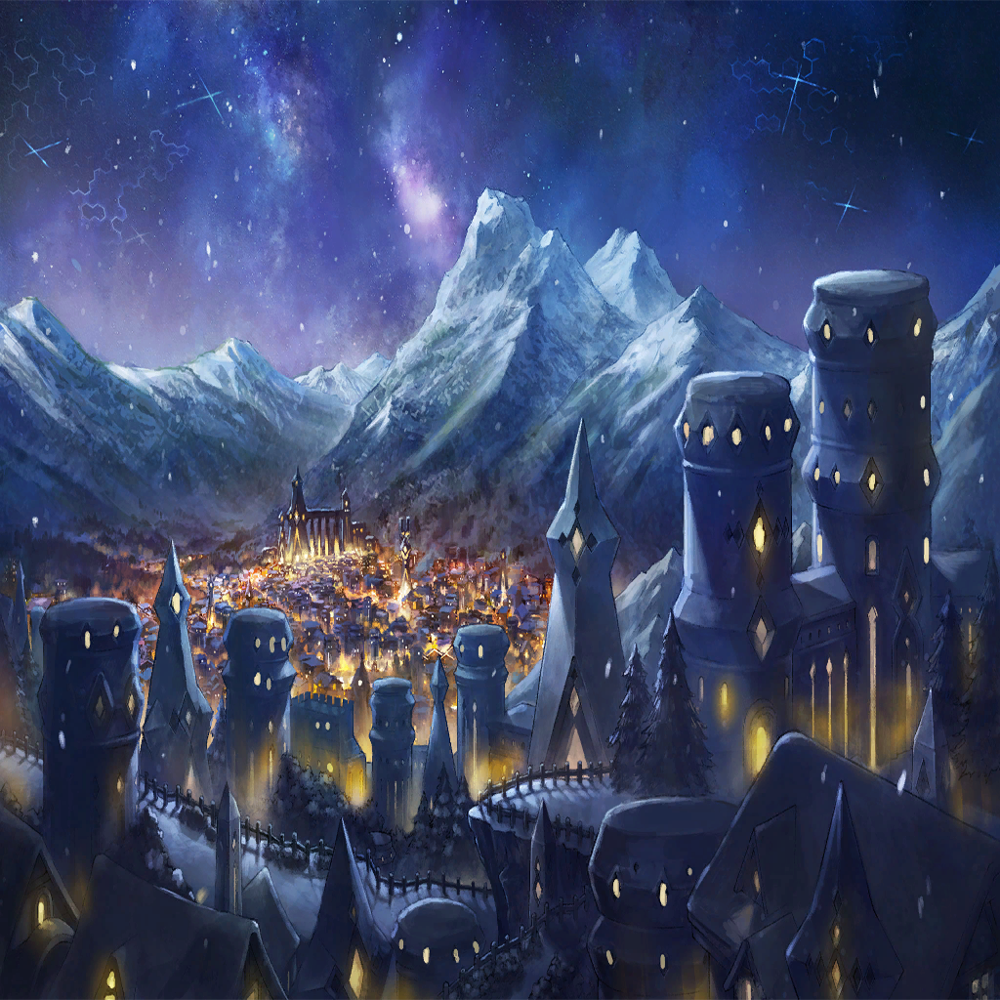

|
|  |
| リル |
わぁ！ |
| リル |
うわぁ、うわぁ！ うわぁ!! |

アンブロシア |
なんでそんなに驚いてるのです？
至って普通の、
平凡でつまらない街並みですけど |
| リル |
わたし、こんなにヒトが居るの
見たの、はじめて！ |
| リル |
ここの壁は、
崩れたり壊れたりしてないんだ！ |
アンブロシア |
どんな廃墟で暮らしてたんですか、
アナタ… |
アンブロシア |
ともかく、クレーブル様のところへ… |
アンブロシア |
…なんです？ |
| リル |
冒険、したい！ |
アンブロシア |
いやですから、その前にですね？ |
| リル |
わたし、知らないことがいっぱいあるの！
人間のことも、あなたのことも
何も知らない |
| リル |
“でも、知らなくちゃいけない”の
しゅめいあがそう言ってた |
| リル |
みんなを助けるには、
わたしはまず色んなことを
知らなくちゃいけないって！ |
| リル |
ね、おともだち、でしょ？ |
アンブロシア |
とも…っ!? |
アンブロシア |
わ、わた、私が？
アナタの…友だっ!? |
| リル |
…？ 違うの？ |
アンブロシア |
ま――まあ？
アナタはここのこと、
何も知らないようだし？ |
アンブロシア |
迷えるヒトビトを導くのも、
魔女の仕事っていうか…うん |
| リル |
案内、してくれるのね？ やったー |
アンブロシア |
…まあ、そうですね
私たち、色欲の民はアナタたちに、
恩もあるし |
| リル |
??? |
アンブロシア |
向こうが鍛冶屋のおじ様の工房で、
あっちが魔法具のお店です
それに向こうにあるのが―― |
| リル |
おー…
あっ！ ねえ、あれは？ あれは？ |
アンブロシア |
ケーキ屋さんですね
めちゃ高なので、
お祝いの日にしか行けませんけど |
| リル |
けーき？ |
アンブロシア |
甘いお菓子です
焼いたり固めたりした、こう…
ほっぺたが落ちそうなくらい美味しい… |
アンブロシア |
特に、フルーツのパイが素敵です！
甘くて、甘くて、蕩けるように甘いの |
| リル |
…なるほど？ |
アンブロシア |
あ、これ、わかってませんね… |
アンブロシア |
仕方がないですね…
私の今日のオヤツだったのですが―― |
| ？？？ |
ほう？ 俺が焼いたパイは
もうひと切れも残ってないと
そう言ってなかったか？ アンブロシア |
アンブロシア |
――あ、ああ、兄弟子!? |
| リル |
あにでし？ |
| 兄弟子と呼ばれた男 |
初めまして、お嬢さん
俺の名はクェンス…そこの、お転婆娘の
保護者みたいなもんだ |
| リル |
おお、ざふぃりす？ |

クェンス |
ザフィ？ なんだ、竜の言語か何かか？ |
アンブロシア |
ひ、ひと目で…わかったのですか？
この子が竜だって |
クェンス |
いや、見りゃわかるだろ
この圧倒的なマギルの量…
人間の域じゃねえよ |
| リル |
わたし、りるって言います
しーあちゃんのお友達です！ |
クェンス |
ほー？ アンブロシアの？ |
アンブロシア |
その、『どんな詐術を使ったんだ？』
みたいな顔は止めて欲しいのですけど？ |
クェンス |
いやだって、お前に友達？
どうやら今日は、
雪どころか槍が降るらしい！ |
アンブロシア |
あーにーでーしー！ |
クェンス |
ははっ、そう怒るなよ
現にお前、全然友達いないだろうが |
| リル |
しーあちゃん、ぼっち？ |
アンブロシア |
外のことをなんにも知らないくせに、
そういう言葉はドコから出てくるの!? |
| リル |
しゅめいあが、ざふぃりすにそう言ってた |
アンブロシア |
知らない人の名前出されても、
わからないですってば |
クェンス |
なるほど、迷子か |
アンブロシア |
ええ、一応竜の方みたいなので
クレーブル様のところに
連れて行く途中なのです |
クェンス |
…師匠のところに？ |
| リル |
ししょー？ |
アンブロシア |
あ、わーっ、わーっ！
私たちの魔法の師匠がクレーブル様だって
ことは秘密じゃないですか、バカ兄弟子っ！ |
クェンス |
“人間風情が、
偉大なる竜の叡智に触れるなど”ってか？ |
クェンス |
言わせておけよ、外野の嫉妬だ |
クェンス |
俺たちには才能があった
だから師匠は、教えを与えた
これはただ、それだけの関係だろうが |
アンブロシア |
それは、そうですが… |
アンブロシア |
（あんまり吹聴すると、
また街の皆が兄弟子の悪口を…うぅ） |
クェンス |
ん？ なんか言ったか？ |
アンブロシア |
な、なんでもないですっ！ |
| リル |
ふたりは、仲良し？ |
アンブロシア |
そんなことないです…！ |
アンブロシア |
兄弟子は、私にはいつも意地悪ばかり！
お掃除もサボるしお庭の手入れもサボるし、
お使いだってサボりまくりの悪い子です！ |
クェンス |
あ？ 自分で料理のひとつも作れない奴が
なんか言ってるなぁ？ おい |
アンブロシア |
は…？ 作れますが？
兄弟子に活躍の機会を
譲ってあげてるだけですが…？ |
クェンス |
嘘つけ、包丁持つのすら怖いくせに
台所に立てないとか、
それでも魔女か、お前は |
アンブロシア |
怖くなんてないですが…!? |
| リル |
やっぱり、仲良し！ |
アンブロシア |
どこ見て言ってるんですか、
リル!? |
クェンス |
…リル？ |
| リル |
そう、それがわたしの名前
“海”って意味なんだって |
クェンス |
………… |
アンブロシア |
もう、いいです！
街の冒険はこれでおしまいっ！
クレーブル様のところに行きましょう |
| リル |
…うん、ありがとう。しーあちゃん |
アンブロシア |
…友達なので |
| リル |
うんっ！ |
 |
| ザフィリス |
七罪統合領域、色欲の層――
クレーブルの館は、ここだったな |
| ザフィリス |
本当に人間とともに暮らしているのか…
我ら竜は、いずれこの地上を去る者
あまり深入りをするべきではないが |
| クレーブル |
そんなもの俺の勝手だろう。ザフィリス |
| クレーブル |
久しぶりだな。少しやつれたか？
シュメイアのところで、
余程こき使われたと見える |
| ザフィリス |
………… |
| クレーブル |
ははは、相変わらずだな貴様
だが挨拶くらいはちゃんとしろ。礼儀だ |
| クレーブル |
まあ、入れ
今の時節、外での会話はあまり好かん |
 |
| クレーブル |
人間は、未熟だ
少なくとも、この世界で生きる術を
授けるまでは、我らはともにあるべきだ |
| ザフィリス |
クレーブル、私は… |
| クレーブル |
わかっている
貴様は人間になど興味はない
あるのは自責と、悔恨のみだとな |
| ザフィリス |
………… |
| クレーブル |
俺たちの――竜の世界を
守り切れなかったこと、
未だに後悔しているのか。貴様は |
| ザフィリス |
…私は |
| クレーブル |
ああ、いい。いい。気にするな
話を振った俺がバカだった |
| クレーブル |
貴様が人間に関心を持たないように、
俺は貴様ら竜に関心を持たん |
| クレーブル |
創世？ 明日への贖罪？
勝手にやっていろ |
| クレーブル |
俺が興味を持ち、信じ、守るのは――
この層に生きる人間たちだけだ |
| クレーブル |
七つの世界を越えたあの“大災害”の中、
この手で救えた彼らこそが
唯一、俺が守るべき価値あるものだ |
| ザフィリス |
…少女が、ここに来なかったか？ |
| クレーブル |
何？ |
| ザフィリス |
竜の少女だ。名前はリル
シュメイア…彼女は、
この層に送ったと言っていた |
| クレーブル |
…少なくとも、
この館を訪ねてはいないな
その娘がどうした？ |
| ザフィリス |
オピネウスが、狙っている |
| クレーブル |
あの“傲慢”の竜が…娘ひとりをか？ |
| ザフィリス |
………… |
| クレーブル |
沈黙は金なり、
とでも言わんばかりの態度だな
ザフィリス |
| クレーブル |
だがそれは、隠し事があると
吹聴しているのと何も変わらんぞ |
| クレーブル |
さては――その少女が“ウロボロス”か
シュメイアは遂に完成させたというわけだ |
| ザフィリス |
…あの子は、リルだ |
| クレーブル |
…なるほど |
| クレーブル |
情でも移ったか？
単なる救済の為の道具だろう、アレは |
| ザフィリス |
あれは…！ |
| ザフィリス |
あの子は、ただの子供だ
世界を救う覚悟も、信念もない
ただの… |
| ザフィリス |
そんなものに、
この大地を背負わせることが…
本当に正しいのか…？ |
| クレーブル |
正しさ、か
いつまでそんなモノに縋っているつもりだ
ザフィリス |
| クレーブル |
我らの文明は滅びた
絶滅ももはや秒読みだ
それはなぜか？ |
| クレーブル |
“間違っていた”からだ |
| クレーブル |
どこが、とは言わん
すべてとも言わん
ただ、致命的な選択を間違えた |
| クレーブル |
その結果が、今の我らだ
だからこそ、認めねばならん |
| クレーブル |
我らは間違えたのだ
もはや、正しい道に戻ることは不可能だ
できることは精々―― |
| クレーブル |
これ以上の過ちを拒絶するか、
より多くの過ちを重ね続けるか
そのふたつの道を選ぶことだけだ |
| ザフィリス |
………… |
| ザフィリス |
お前は、どうなんだ。クレーブル
過ちを否定するのか？ それとも―― |
| クレーブル |
…今、この世界に起こる危機
それに貴様は無自覚なようだ |
| クレーブル |
――ついて来い、貴様にも見せてやろう |
| クレーブル |
この世界が、これより直面することになる
新たなる災害を |
| ザフィリス |
何…？ |
 |
| ザフィリス |
ここは…罪人を収監する施設か？
なぜこんなものを、自分の館に… |
| クレーブル |
見せるわけには、いかないからだ
この層に暮らす、
我が愛しき民たちの誰にも… |
| クレーブル |
こんなもの、
どう伝えればいいというのだ？ |
| ザフィリス |
こんな、もの――？ |
| 穢れに呑まれたもの |
オォォォアァァアァァア―― |